I don't fit neatly into a box—and that's by design. Every chapter of my career built a capability the next one needed. From adapting under pressure as a Marine to leading research that shapes how millions of veterans experience the VA, the through-line has always been the same: go where the hard problems are, understand the humans at the center, and build systems that scale.
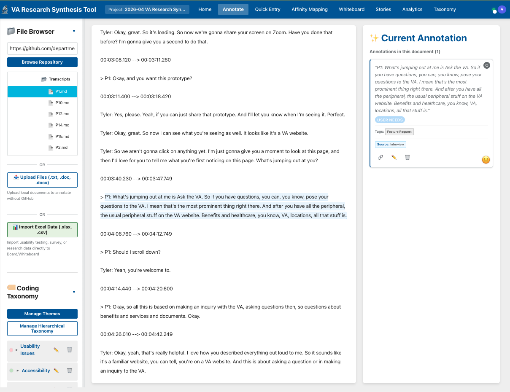
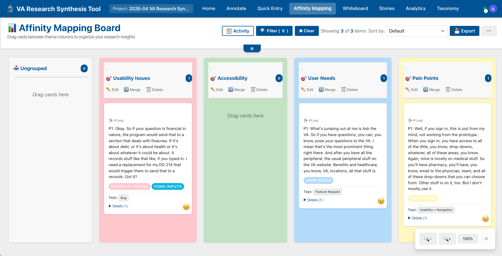
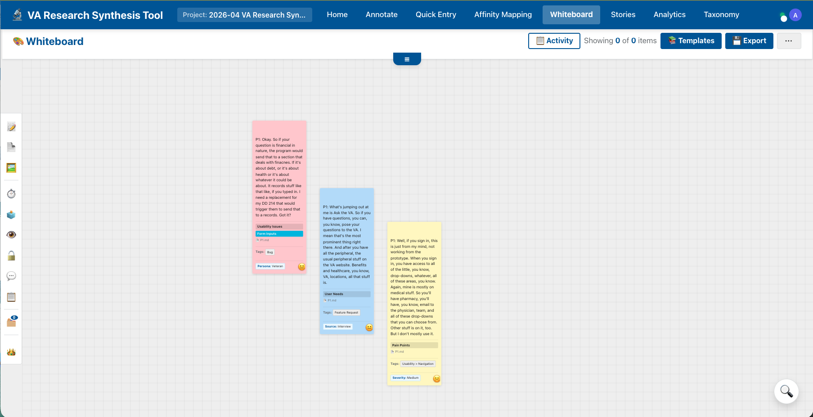
The Problem
VA runs 90–100 user research studies per year. Before this tool existed, there was no professional qualitative research tooling available to teams. Synthesis happened in Excel spreadsheets, sticky note boards in Mural, and MS Word documents—despite the fact that all official research reporting is done in markdown on GitHub. The gap between where the work happened and where it needed to live meant researchers were manually reformatting, copy-pasting, and losing context at every handoff.
For a practice running this volume of studies, that friction compounds. Insights from one study weren’t findable by the team running the next one. Institutional knowledge evaporated when researchers left. There was no way to ask “what do we already know about this?” and get a reliable answer.
What I Built
A free, open-source, government-owned research synthesis platform, built with GitHub Copilot and hosted on GitHub Pages. It integrates directly into the GitHub workflows VA teams already use. The workflow covers the entire qualitative research cycle in one place:
The AI Layer
Beyond the Copilot Space for report drafting, the tool includes client-side AI-assisted clustering using TF-IDF similarity scoring to suggest groupings across coded findings. No API keys, no data leaving VA infrastructure. The AI surfaces pattern candidates; researchers decide what holds.
Access & Ownership
The tool is released under CC0—public domain. Any government research practice can adopt and adapt it. Access requires membership in the VA GitHub organization and repository. It lives where the work already lives: in GitHub, alongside the research reports it helps produce.
What’s Next
The tool is being migrated to VA’s AWS infrastructure to enable real-time collaboration across distributed research teams—presence indicators, cursor tracking, and live synthesis sessions without the constraints of a static host. The infrastructure that replaced Excel is becoming the infrastructure teams actually build together in.
The Problem
Pickup basketball has a coordination problem. Players drive to a court and find it empty. Or they show up to a game that's too competitive, or not competitive enough. Existing apps locate courts but they don’t build community—there’s no way to know who is actually there, who plays at what level, or how to organize a game before you leave the house.
I wanted to solve it the way it happens naturally on the court—someone calls “got next” to claim the next game. That phrase became the product: a way to claim your next game through community instead of hope.
What I Built
A native iOS app in SwiftUI with a Supabase backend, iPhone widgets, Apple Watch companion, and App Store deployment—shipped in roughly six weeks as a non-traditional engineer using Claude Code as my pair.
The Gallery
Live screens from GotNXT running on iPhone. Tap any screen to view it full size.
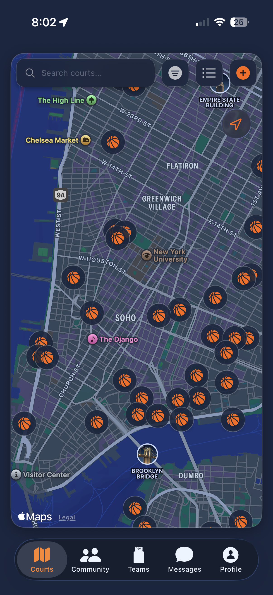
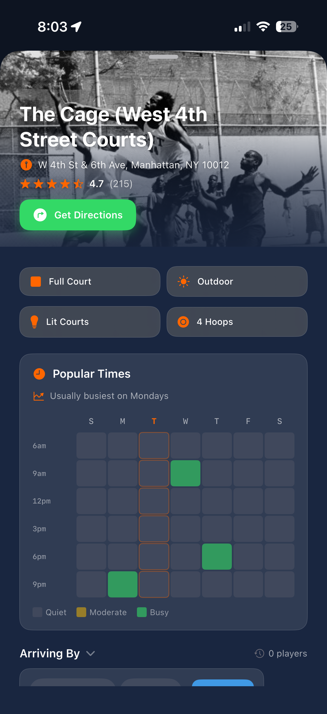
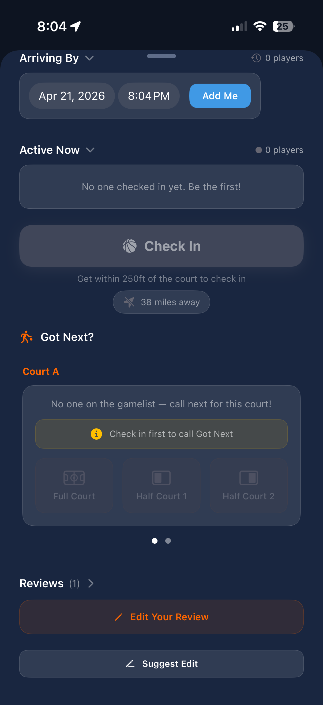
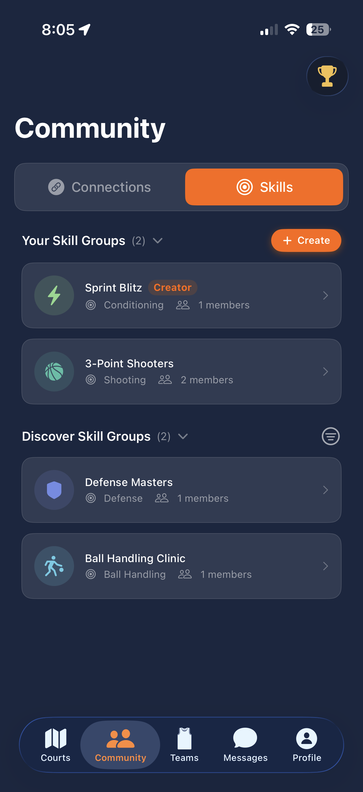
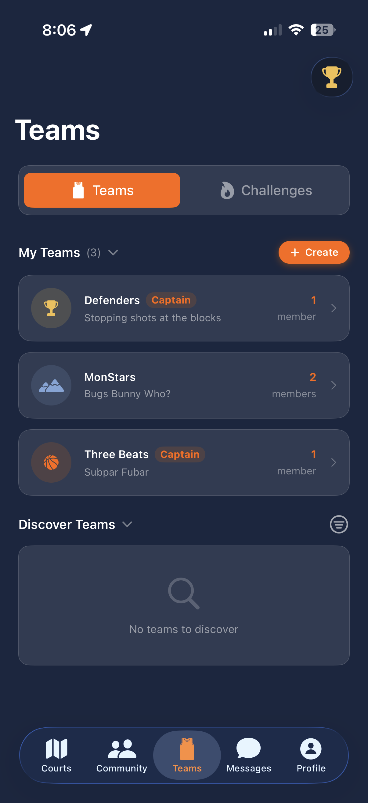
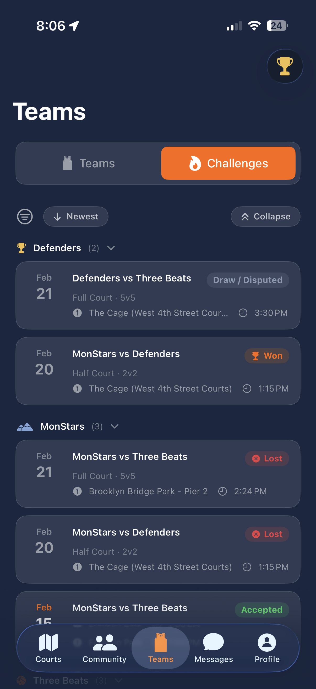
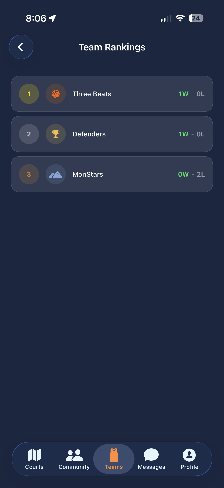
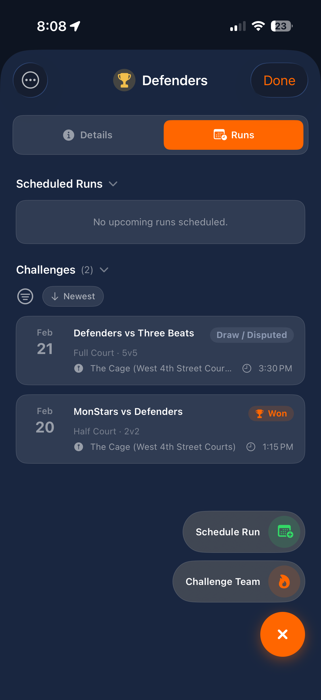
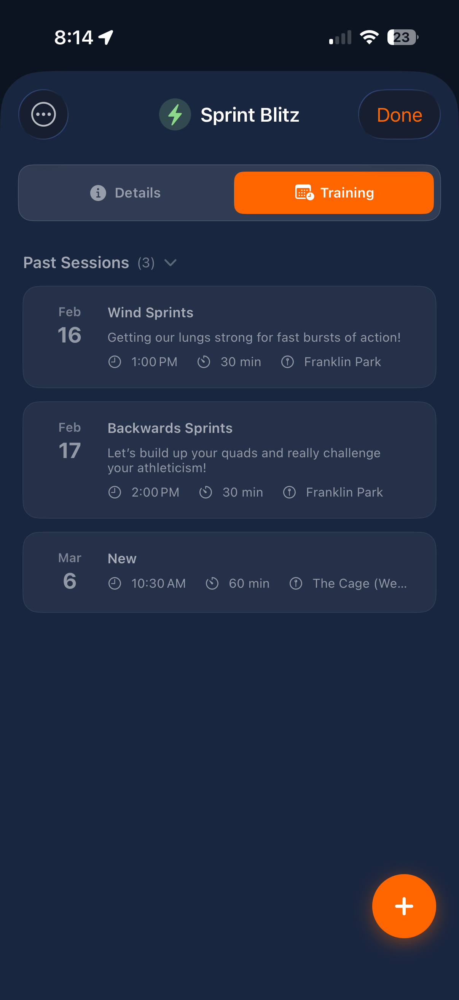
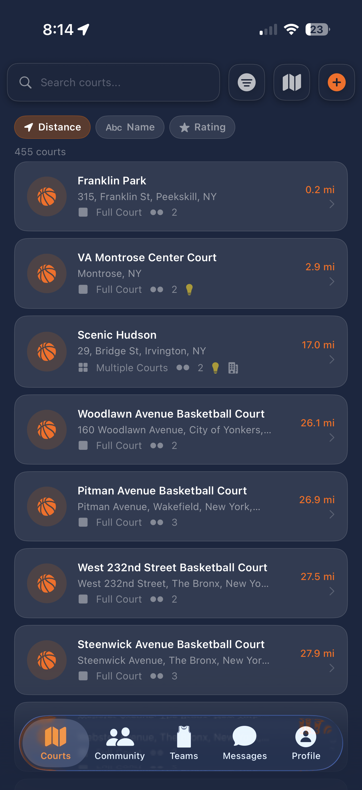
How I Built It With AI
I am not a traditional engineer. I’ve always been the researcher and designer in the room. Claude Code changed the shape of what I could ship on my own. My workflow: describe the feature in plain language, review the generated SwiftUI and service code, test on a physical iPhone, iterate. Claude handled the Swift, the Supabase schema migrations, the geofencing edge cases, and the WidgetKit and ActivityKit integrations.
What I brought: the product vision, the research instinct for what a player actually needs at a court, the design decisions, and the judgment to push back when an approach wouldn’t hold up in the real world. The AI was a force multiplier—not a replacement for taste.
Stack
SwiftUI · MapKit · CoreLocation (region monitoring) · Supabase (auth, Postgres, real-time) · Apple Sign-In · WidgetKit · ActivityKit · Apple Watch companion app. Built and deployed to TestFlight and the App Store.
What’s Next
Tournament organization, verified trainer marketplace (identity verification for youth protection), and deeper league mechanics built on the existing teams and challenges system. The core loop—find a court, find your people, play—is working. Everything else scales from there.
The Problem
The VA runs more user research than almost any product organization in the federal government—thousands of studies across dozens of teams, spanning everything from disability claims to mental health care to tuition benefits. All of it lived in a Github repository meant to be an index, but in practice it had become a graveyard: inconsistently labeled, rarely re-read, and almost never cross-referenced. A researcher starting a new study in 2024 couldn’t reliably find out whether that same question had already been answered in 2021.
The cost of that wasn’t academic. It meant Veterans were being asked the same questions twice. It meant recommendations from finished studies were dying on the vine. And it meant the VA couldn’t answer a question any modern research organization should be able to answer: what do we already know?
The Approach
Rather than write another memo about what a better system should look like, I built one. Project Recon is a working proof of concept—a static site I shipped on GitHub Pages, assembled with GitHub Copilot as my pair—that turns the flat research repository into a searchable, pattern-aware knowledge base. It’s the argument, made in code, that got the VA to fund a real v2 with a real engineer.
The core insight: if every finding is tagged against a shared taxonomy (user group, journey stage, severity, topic), then the repository isn’t just a list—it’s a graph. And a graph can tell you things a list can’t: which patterns recur across products, which user groups are over- or under-studied, and which recommendations are echoing across teams who don’t know they agree.
- Structured metadata schema — a YAML label system covering user groups, life events, journey stages, and severity, versioned in the repo so changes are auditable.
- Findings ingestion — findings authored as YAML, auto-converted to JSON via GitHub Actions on every commit.
- Pattern detection engine — rule-based matcher that identifies recurring themes across studies using AND/OR logic over label combinations.
- Findings Explorer — a static web app (GitHub Pages) with faceted search, multi-select filters, and a detail view linking related findings.
- Visualization layer — network graph of label co-occurrences, heatmaps, and quarterly trend lines so strategists can see the shape of the evidence.
- Insight generator — automated recommendations plus gap analysis that flags label combinations with few or no findings—pointing at the next study worth running.
- Exportable briefs — CSV and PDF insight reports generated from the same data, so leadership updates stop being hand-built decks.
Design Targets
The PRD was explicit about what “good” looked like—because vague goals are how research tools die.
What I Built, Hands-On
- The taxonomy — authored the label schema, mapped it to existing VA research vocabulary, and wrote the validation rules.
- The static site — built the HTML / CSS / JS Findings Explorer on GitHub Pages using the VA Design System, paired with GitHub Copilot.
- The pattern engine — defined the rule format and wrote the matcher that produces confidence scores from label specificity.
- The PRD and architecture docs — the artifacts that turned a POC into a funded v2 with an actual engineer carrying it forward.
Impact
- Proved the thesis. A non-engineer, using GitHub Pages and Copilot, shipped a working knowledge system that leadership could click through—not a slide that described one.
- Unlocked engineering investment. The POC convinced OCTO to staff a real engineer on v2; Project Recon is now the specification that v2 is being built against.
- Reframed the repository from a filing cabinet into a graph—and, by extension, from a reactive archive into something capable of predicting where research should go next.
- Set the pattern for AI-readiness. The same taxonomy I built for Project Recon is the backbone of the AI-ready knowledge work I’m doing at OCTO today.
FY26 Extension The Automation Layer
A knowledge graph is only as good as what feeds it and what it changes. The FY26 Research-Ops Institutionalization Plan turns Project Recon from a searchable archive into an operating system—built on a set of GitHub Actions I’ve authored with Copilot to close the loop between research, metadata, and shipped product.
- Key Finding Labels Extraction Action — parses structured YAML blocks out of every findings report on commit, validates them against the taxonomy, and writes the data the Findings Explorer reads. Labeling stops being a manual step researchers skip.
- Diversity Data Extraction Action — pulls participant demographics out of report front matter to power quarterly diversity reporting and an underserved-groups gap analysis—so equity in who we research from becomes measurable, not aspirational.
- Reminder Bot Action — runs a 7-day check on every closed research issue, nudging researchers to link sub-issues for their recommendations. This is the hinge that makes Research-to-Release tracking actually work.
- Copilot-generated sub-issues — recommendations in a findings report become GitHub sub-issues that drop onto product team boards, so every study has a traceable path from “we learned X” to “Y shipped because of it.”
Together, these Actions are how the FY26 plan makes research accountable for the first time—not by adding process, but by automating the evidence trail.
Why It Mattered to Me
I’m not a software engineer. I’m a researcher who learned to ship. The point of Project Recon wasn’t that the code was pristine—it’s that the code existed at all. In an organization where “we should build something like this” can die in a backlog for years, having a working URL you can send someone is a different kind of argument. AI-augmented tools let me make that argument in weeks instead of quarters. This project is the proof, and it’s the reason a better version of it now has a real engineer, a real roadmap, and a real chance of changing how the VA remembers what it has learned.
The Problem
Federal agencies couldn’t hire technical talent fast enough to keep up with their own missions. The average time-to-hire across government hovered around 106 days—nearly four months before a candidate even got an offer—and the resulting certificates were often stacked with applicants who didn’t actually have the skills the job required. Hiring managers were handed lists of “qualified” candidates they couldn’t use, and qualified technologists were filtered out before anyone with technical expertise ever saw their resume.
The root cause wasn’t effort. It was process. Resumes were scored by HR specialists against self-assessment questionnaires that rewarded keyword matching over actual ability. There was no technical expert in the loop until the very end—and by then the damage was already done.
The Approach
USDS had already built a better way to hire its own engineers. The opportunity was to turn that internal practice into something any agency could adopt—a repeatable five-step process called Subject Matter Expert Qualification Assessment (SME-QA) that put technical experts at the center of the hiring decision from day one.
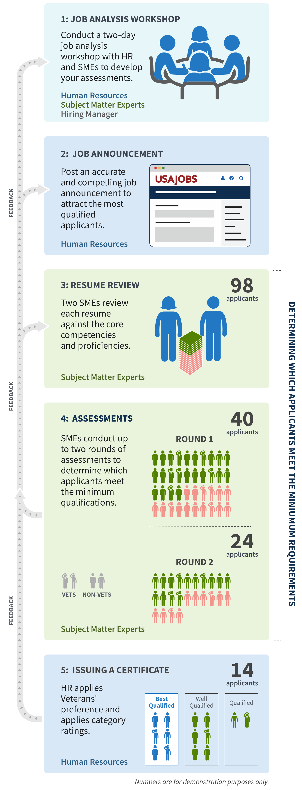
- Job Analysis Workshop — SMEs and HR define the specific competencies the role actually requires, not the ones the boilerplate calls for.
- Job Announcement — written in plain language so technologists recognize themselves in the posting.
- Resume Review — SMEs, not HR specialists, read resumes against the agreed competencies.
- Assessments — structured technical and behavioral interviews, scored consistently across candidates.
- Certificate — hiring managers receive a short list of candidates who can actually do the work.
The Impact
Across two rounds of pilots, the team ran 17 hiring actions in partnership with 42 agencies. 6,450 applicants moved through the process, 933 were certified as qualified, and 406 selections were made—with 274 candidates accepting offers.
- 11–16 days to first selection, versus a 37-day government average for the same phase.
- Cost-neutral to industry—roughly $4,425 per hire, compared to the $10,561 federal benchmark.
- 42 agencies adopted or participated in the process, turning a USDS-internal practice into a government-wide capability.
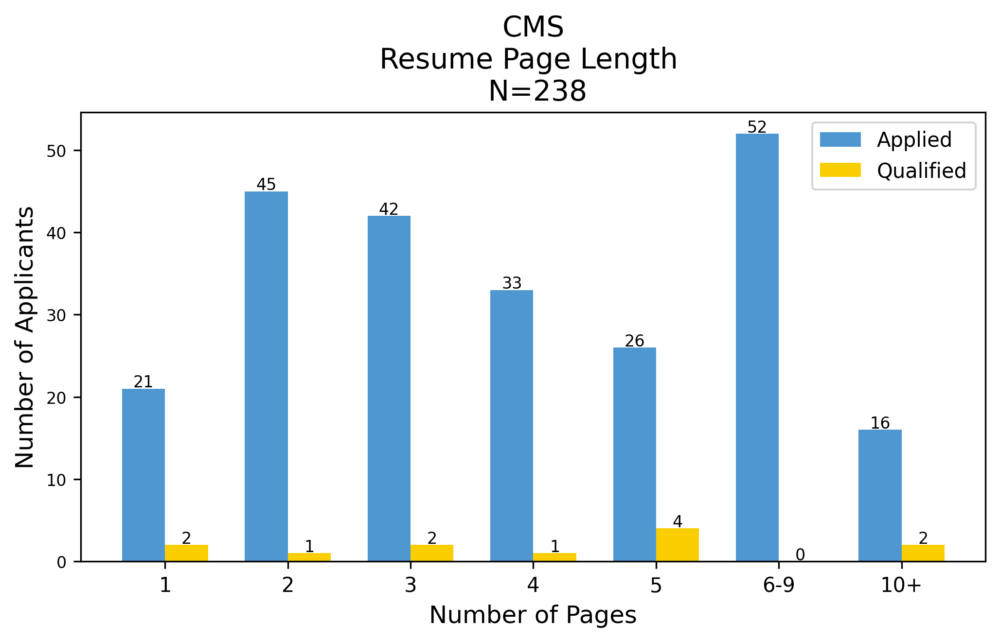
What Partners Said
- “We have a list of 36 people who can do the job.” — HHS hiring manager, after running SME-QA.
- “When we told some people we hired this many people… they said ‘How many years did it take?’” — DOI hiring manager.
Why It Mattered
SME-QA didn’t require new legislation, new budget, or a new agency. It required rearranging who made which decision, and when. That’s the kind of change I care most about—small shifts in process that compound into dramatically better outcomes for the people the government is supposed to serve. Watching a hiring manager open a certificate and see candidates they were genuinely excited to interview, instead of a list they were resigned to, is the moment I keep coming back to.
The Problem
VA was preparing to ship its first chatbot on VA.gov—before ChatGPT, before conversational AI was a cultural default. The team knew the technology would work. What they didn’t know was what the chatbot should sound like. Should it have a name? A personality? A military-inflected voice? A casual one? Get those choices wrong in front of 20 million Veterans and you don’t just ship a bad feature—you erode the trust VA.gov had spent years earning.
I led two research studies to answer that question before a single production word got written: one on tone, voice, and branding with a broad Veteran audience, and one on inclusive design with blind and low-vision Veterans to make sure the answer worked for everyone.
Study 01 Tone, Voice & Branding
Seventeen participants—ten Veterans and seven family members and caregivers, across eleven states—walked through chatbot concepts with us over a week of remote moderated interviews. The question underneath every session: where is the line between “warm enough to feel human” and “casual enough to feel careless with benefits?”
The answer was more precise than we expected. Veterans didn’t want a persona. They didn’t want a mascot, a name, or a personality that pretended to be a friend. What they wanted was a professional but friendly tone that projects confidence—the voice of an usher or concierge, not a buddy and not a bureaucrat. A generic name (“VA Chatbot,” “Virtual Agent”) tested better than any branded one, because it set accurate expectations: this is a tool that routes you, and when it can’t, it hands you to a person who can.
“Helpful, like an usher or concierge. Something that’s able to ask questions of a Veteran that’s not computer literate.”
Veteran, tone & voice study
“The expectation is that a bot is going to be the first part of it—and if they can’t answer it, they go to a live person.”
Veteran, tone & voice study
- Service-driven, not character-driven — confidence and accuracy earn trust; personality quirks erode it.
- Keep the name generic — “VA Chatbot” sets honest expectations about what it is and isn’t.
- Make the escalation path obvious — Veterans accept a bot as a first step if they know a human is the second.
- Authenticate when possible — Veterans expect the VA to already know who they are; asking twice breaks the illusion of a single VA.
Study 02 Inclusive Design
A chatbot that sounds warm but can’t be used by a Veteran with a screen reader is worse than no chatbot at all. So we ran a second, deliberately small study with three blind and low-vision Veterans across New Mexico, Maryland, and Missouri—using JAWS and VoiceOver to walk through the prototype the same way they’d walk through a real release.
We found two Section 508 “must-fix” defects before launch:
- Links inside chatbot responses weren’t keyboard-focusable — TAB navigation skipped right over them, meaning screen-reader users couldn’t follow the bot’s own suggestions.
- Screen readers announced links as “messages” — stripping the semantic cue that a Veteran needed to know something was clickable.
Secondary issues—difficulty locating the chatbot on the page, missing focus indicators on the input field, and navigation friction when moving away from the widget—went into the backlog with a clear priority order.
“I’m pretty excited about these types of products… something that doesn’t use resources or a whole lot of time.”
Veteran, inclusive design study
“A form that could be pre-populated with my information would be helpful. You have all my information already.”
Veteran, inclusive design study
The Impact
The branding study became the style guide the product team wrote against. The inclusive design study became the accessibility punch-list the engineering team worked through with Microsoft before the chatbot went live. Together, they turned a launch that could have been a brand risk into a measured, evidence-backed release—the first conversational interface on VA.gov that Veterans, including Veterans using assistive technology, could actually trust.
- Established the chatbot’s voice as professional-but-warm and ruled out named-persona branding before production.
- Caught two 508 defects pre-launch that would have blocked screen-reader users from using the feature at all.
- Set the pattern for how subsequent VA.gov conversational features would be researched—broad tone study plus a dedicated accessibility pass.
Why It Mattered to Me
This was the project that taught me how much design decisions read as character to the people on the other end of them. A tone that’s too casual tells a Veteran the VA isn’t serious about their claim. A screen-reader bug tells them the VA didn’t think about them at all. The specific words on the screen are small. What they signal is not. Getting both studies into the room before launch—and insisting the inclusive design work count just as much as the branding work—is the part I’m still proudest of.
The Problem
Large organizations are bad at remembering what they’ve already learned. WeWork was no exception. Research happened in silos, reports sat in folders no one reopened, and the only way to get an answer about members was to find a researcher who’d been in the room when the question came up the first time.
Four patterns kept compounding:
- Bad research memory. Past studies were hard to recall, leading to duplicative research and wasted time.
- Research silos. Multiple departments ran research with no shared system for sensemaking.
- Reports without granularity. Final reports flattened findings; unexpected, reusable insights were lost.
- Research dictatorship. Only researchers could offer insights. Product teams depended on researcher memory instead of the data itself.
The Approach
I was recruited by Tomer Sharon (ex-Google) to help build the thing that would solve it. Over six months, I ran qualitative interviews with nearly 500 WeWork members—in person, by phone, and over video—and designed the taxonomy that would make the resulting content navigable to anyone in the company, not just researchers.
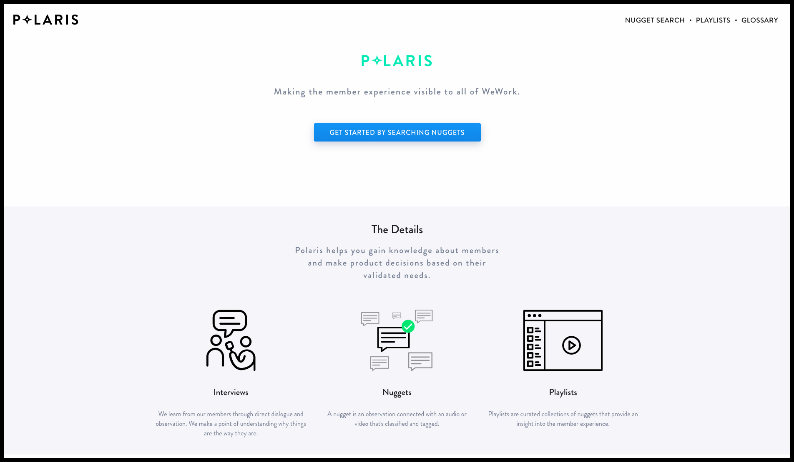
The Nugget
The atomic unit of Polaris was the nugget: an observation (what was learned) paired with evidence (audio, video, screenshots, or photos of the member saying it) and a set of tags that made it filterable. A nugget is small enough to be reusable and specific enough to be honest. Nuggets don’t get reinterpreted every time they move—they carry their source with them.
By the time Polaris scaled, the library held more than 4,000 nuggets drawn from hundreds of interviews.
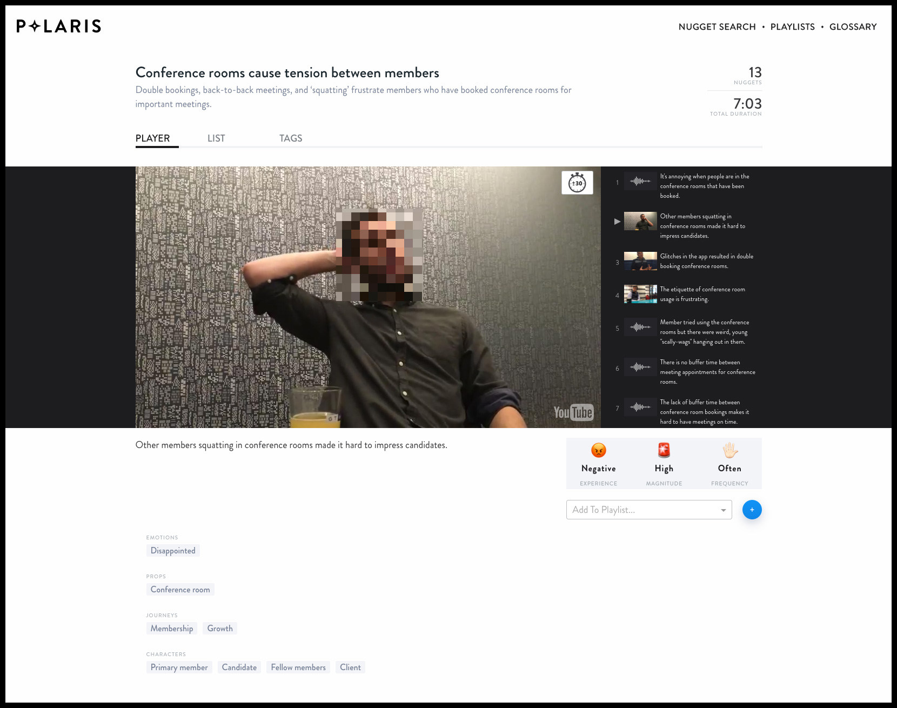
Three Capabilities
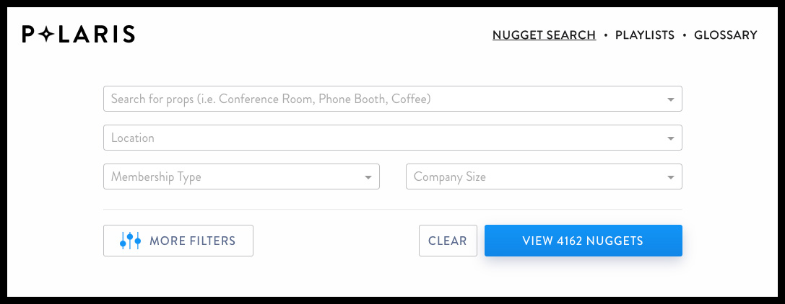
What It Changed
Polaris addressed three organizational needs the old model couldn’t:
- Prioritize — decide what’s worth building based on validated member need, not intuition.
- Educate — bring teams already in motion up to speed on what members have already told us.
- Allocate — steer the next project, large or small, toward evidence instead of anecdote.
Why It Mattered to Me
Polaris is the blueprint for everything I’ve built since. The same instincts—listen at scale, tag the evidence, make the library usable by non-researchers, keep the source attached to the insight—show up in the VA Research Synthesis Tool, the GitHub research repository, and the AI-ready taxonomy work I’m doing at OCTO today. I learned here that the most durable thing a researcher can leave behind isn’t a report. It’s the system that lets the next person find what the last person learned.
- Led 90–100+ user research studies annually across VA.gov products
- Research lead for USDS discovery sprints at SSA and the Refugee & Asylum Office
- Built research quality standards, review processes, and mentorship programs
- Trained non-researchers and stakeholders in human-centered design practices
- Built AI-powered synthesis, annotation, and report-drafting tools with GitHub Copilot
- Designed taxonomy + ML pipeline concept for predictive research insight
- Created automated nudge bots, workflow automations, and research impact tracking systems
- Built AI review prompts that provide structured feedback on research plans and conversation guides
- Shipped a full iOS app using Claude Code in six weeks as a non-traditional engineer
- Comfortable building in GitHub, writing in markdown, and working alongside engineers
- Built Perplexity.ai spaces for VA design system documentation and OCTO practices
- Working on automated OKR tracking systems with VA's Director of Product